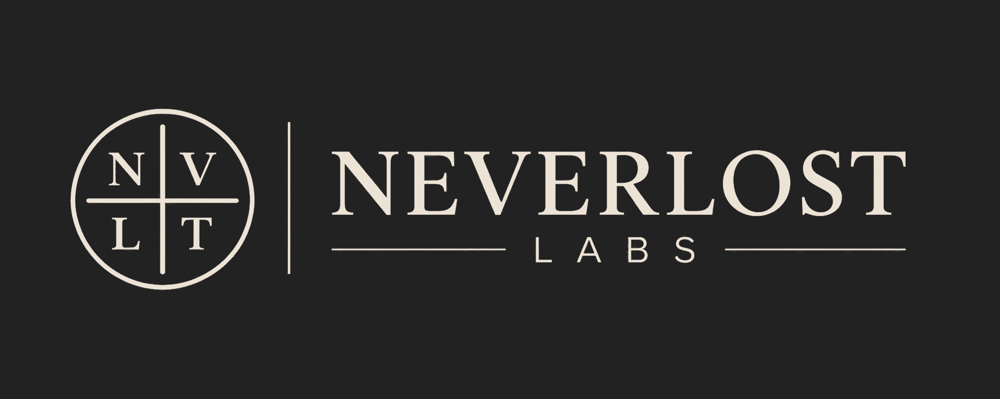
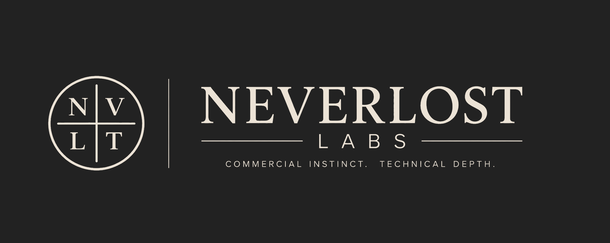

01
AI Automation
Document intake, classification, routing, approvals, reporting, and repetitive operational workflows.
Neverlost Labs
We design and build AI automation, internal tools, agents, and custom software for complex workflows where context, reliability, and human judgment matter.
The commercial AI systems and software division of Neverlost Systems.

What we build
01
Document intake, classification, routing, approvals, reporting, and repetitive operational workflows.
02
Conversational systems, internal operators, persistent memory, tool use, and human-controlled actions.
03
Internal applications, portals, dashboards, APIs, databases, and workflow-specific tools.
04
Connect CRMs, accounting systems, email, cloud storage, business software, healthcare platforms, and third-party APIs.
05
Patient-facing workflows, intake, navigation, provider review, and carefully bounded healthcare software.
Built on the Neverlost approach
Neverlost Systems was built around a simple principle: Preserve Before You Understand. Labs applies that principle to client systems by preserving relevant state, defining authority, keeping consequential actions bounded, verifying outcomes, and carrying what was learned into the next decision.
Selected work
Working Neverlost prototype
AI-assisted case workflow with structured state and human review
A working system for transforming fragmented source material into structured case information while keeping AI proposals separate from accepted state and preserving traceability back to source evidence.
Shown with synthetic, public-safe demonstration data. This is internal product work, not a paid client engagement.

How we work
Understand the workflow, constraints, users, systems, and business objective.
Determine what should be automated, integrated, or custom-built.
Develop the system in controlled stages with visible milestones.
Test behavior, failure states, integrations, and human decision boundaries.
Ship a usable production system and preserve the context needed to operate and extend it.
Small team. Direct collaboration.
You work directly with the people designing and building the system. No account-manager handoffs and no oversized agency structure.
Product Strategy & Systems
Discovery, workflow architecture, AI orchestration, product direction, sales and marketing strategy, client communication, and QA.
Technical Lead
Software architecture, backend and frontend development, APIs, databases, integrations, deployment, and technical implementation.

Start a project
Tell us what is fragmented, repetitive, difficult to scale, or taking too much human attention. We can help determine what should be automated, integrated, or built.